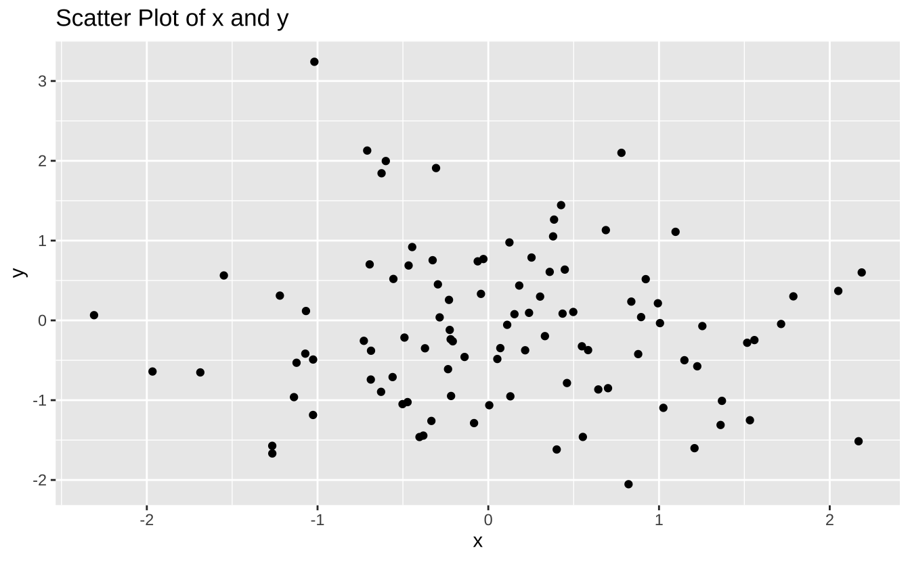
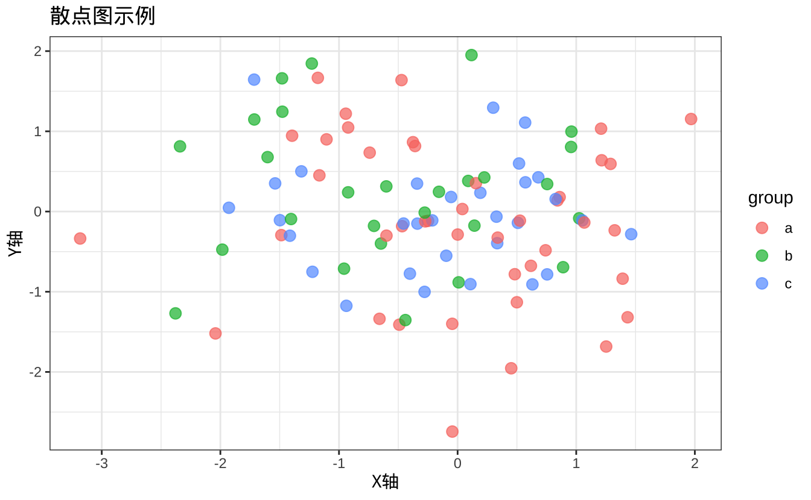
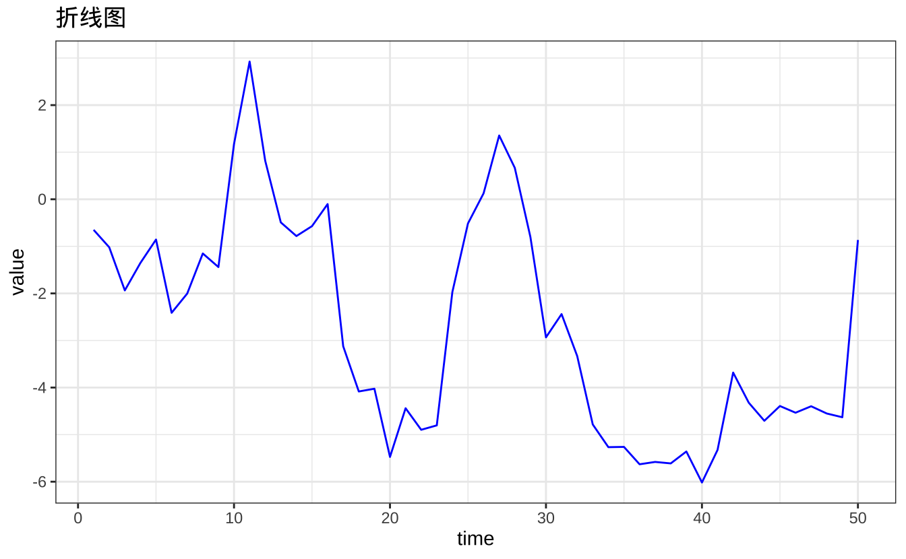
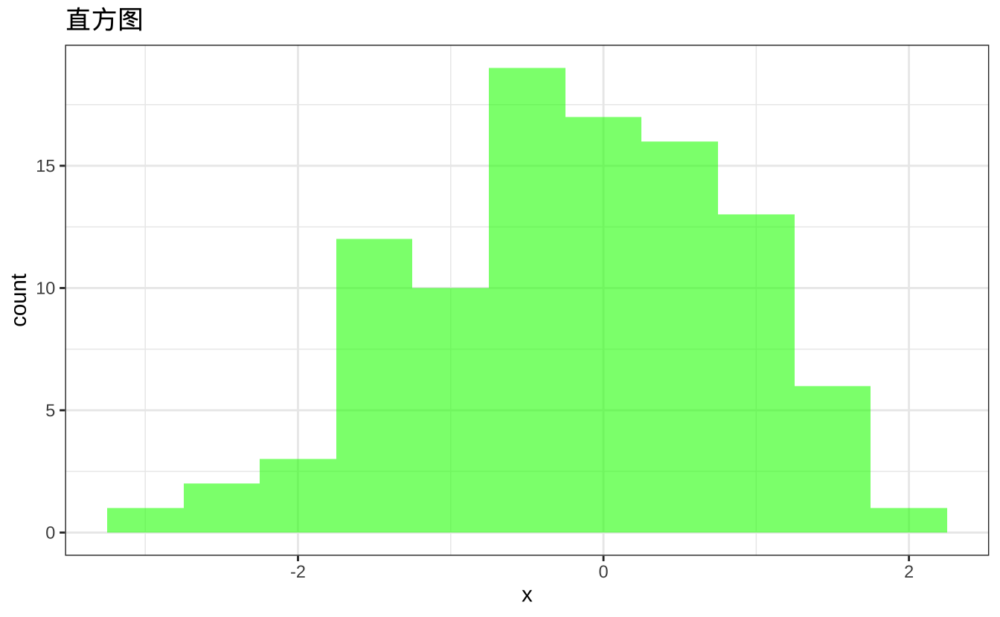
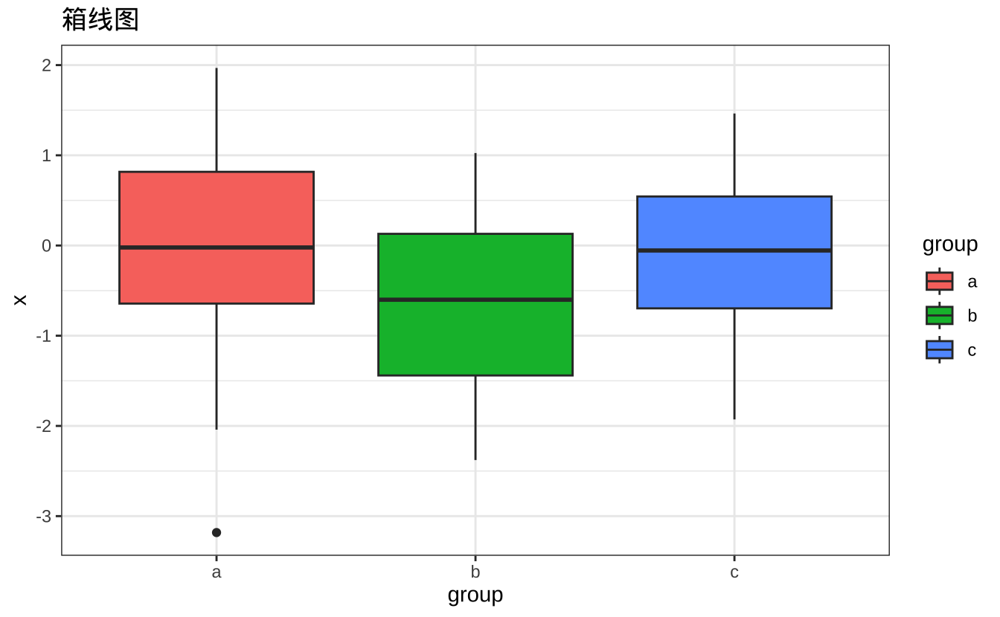
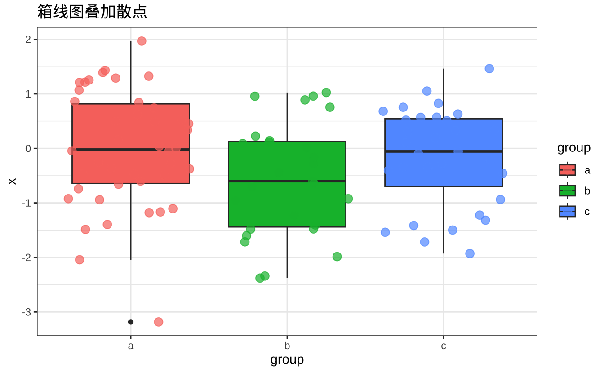

graph LR
A[数据导入] --> B[数据清洗]
B --> C[数据探索]
C --> D[统计分析]
D --> E[可视化]
E --> F[建模预测]
7 R 语言入门
R语言最初由Ross Ihaka和Robert Gentleman于1993年开发，是从S语言演变而来的开源编程语言。因其强大的数据处理和统计分析能力，R已成为数据科学领域的标准工具之一。
7.1 R在数据科学中的优势
- 丰富的统计与数据分析功能：内置众多统计分析函数，涵盖回归分析、时间序列分析、聚类分析等
- 强大的数据可视化能力：通过ggplot2等包可生成出版级质量的图表
- 广泛的社区支持与软件包生态：CRAN和Bioconductor提供数以万计的扩展包
7.2 数据分析流程
典型的数据分析流程如下：
常用分析包
dplyr：数据处理ggplot2：数据可视化caret：机器学习
下面是一个完整的数据分析示例：
library(dplyr)
library(ggplot2)
library(caret)
# 生成示例数据
set.seed(123)
data <- data.frame(
x = rnorm(100),
y = rnorm(100)
)
# 描述性统计
summary_stats <- data |>
summarise(
mean_x = mean(x),
mean_y = mean(y),
sd_x = sd(x),
sd_y = sd(y)
)
print(summary_stats) mean_x mean_y sd_x sd_y
1 0.09040591 -0.1075468 0.9128159 0.9669866ggplot(data, aes(x = x, y = y)) +
geom_point() +
labs(title = "Scatter Plot of x and y", x = "x", y = "y")
# 线性回归模型
model <- train(y ~ x, data = data, method = "lm")
summary(model$finalModel)
Call:
lm(formula = .outcome ~ ., data = dat)
Residuals:
Min 1Q Median 3Q Max
-1.9073 -0.6835 -0.0875 0.5806 3.2904
Coefficients:
Estimate Std. Error t value Pr(>|t|)
(Intercept) -0.10280 0.09755 -1.054 0.295
x -0.05247 0.10688 -0.491 0.625
Residual standard error: 0.9707 on 98 degrees of freedom
Multiple R-squared: 0.002453, Adjusted R-squared: -0.007726
F-statistic: 0.241 on 1 and 98 DF, p-value: 0.62467.3 基本概念与操作
7.3.1 数据类型与数据结构
7.3.1.1 向量、矩阵与数组
# 创建向量
numeric_vector <- c(1, 2, 3, 4, 5)
character_vector <- c("a", "b", "c", "d")
logical_vector <- c(TRUE, FALSE, TRUE, FALSE)
# 创建矩阵
matrix_example <- matrix(1:9, nrow = 3, ncol = 3)
# 创建三维数组
array_example <- array(1:24, dim = c(3, 4, 2))
print(numeric_vector)[1] 1 2 3 4 5print(matrix_example) [,1] [,2] [,3]
[1,] 1 4 7
[2,] 2 5 8
[3,] 3 6 97.3.1.2 数据框与列表
# 创建数据框
data_frame <- data.frame(
name = c("Alice", "Bob", "Charlie"),
age = c(25, 30, 35),
city = c("New York", "Los Angeles", "Chicago")
)
# 创建列表
list_example <- list(
numeric_vector = numeric_vector,
matrix_example = matrix_example,
data_frame = data_frame
)
print(data_frame) name age city
1 Alice 25 New York
2 Bob 30 Los Angeles
3 Charlie 35 Chicagoprint(list_example$data_frame) name age city
1 Alice 25 New York
2 Bob 30 Los Angeles
3 Charlie 35 Chicago
Note
数据框是R中最常用的数据结构，类似于数据库表格，可以包含不同类型的列。
7.3.1.3 因子与日期时间
# 创建因子
factor_example <- factor(c("Male", "Female", "Male", "Female"))
print(factor_example)[1] Male Female Male Female
Levels: Female Male# 创建日期时间向量
date_time_vector <- as.POSIXct(c("2024-01-01 12:00:00", "2024-01-01 13:00:00"))
print(date_time_vector)[1] "2024-01-01 12:00:00 CST" "2024-01-01 13:00:00 CST"7.3.2 基本语法与操作
7.3.2.1 变量赋值与运算符
# 变量赋值
x <- 10
y = 20
# 比较运算
print(x == y) # 等于[1] FALSEprint(x != y) # 不等于[1] TRUEprint(x > y) # 大于[1] FALSE7.3.2.2 控制结构
# 条件判断
if (x > 0) {
print("x is positive")
} else {
print("x is negative")
}[1] "x is positive"# for循环
for (i in 1:5) {
print(i)
}[1] 1
[1] 2
[1] 3
[1] 4
[1] 57.3.2.3 函数定义与调用
# 定义函数
my_function <- function(x) {
return(x + 1)
}
# 调用函数
print(my_function(1))[1] 27.4 数据分析软件包
7.4.1 dplyr包
7.4.1.1 数据筛选与过滤
data_frame |>
filter(age > 30) name age city
1 Charlie 35 Chicago7.4.1.2 数据排序与汇总
# 排序
data_frame |>
arrange(age) name age city
1 Alice 25 New York
2 Bob 30 Los Angeles
3 Charlie 35 Chicago# 汇总
data_frame |>
summarise(mean_age = mean(age)) mean_age
1 307.4.2 ggplot2包
Tip
ggplot2基于”图形语法”理论，通过层次化的方式创建图形。
7.4.2.1 基本用法
library(ggplot2)
# 创建示例数据
data <- data.frame(
x = rnorm(100),
y = rnorm(100),
group = sample(letters[1:3], 100, replace = TRUE)
)
# 散点图
ggplot(data, aes(x = x, y = y, color = group)) +
geom_point(size = 3, alpha = 0.7) +
labs(title = "散点图示例", x = "X轴", y = "Y轴") +
theme_bw()
7.4.2.2 常见图表类型
# 折线图
time_data <- data.frame(
time = 1:50,
value = cumsum(rnorm(50))
)
p1 <- ggplot(time_data, aes(x = time, y = value)) +
geom_line(color = "blue") +
labs(title = "折线图") +
theme_bw()
# 直方图
p2 <- ggplot(data, aes(x = x)) +
geom_histogram(binwidth = 0.5, fill = "green", alpha = 0.6) +
labs(title = "直方图") +
theme_bw()
# 箱线图
p3 <- ggplot(data, aes(x = group, y = x, fill = group)) +
geom_boxplot() +
labs(title = "箱线图") +
theme_bw()
p1
p2
p3


7.4.2.3 图层叠加
ggplot(data, aes(x = group, y = x, fill = group)) +
geom_boxplot() +
geom_jitter(aes(color = group), size = 3, alpha = 0.7) +
labs(title = "箱线图叠加散点") +
theme_bw()
7.4.3 stringr包
library(stringr)
text <- "Hello, R language!"
# 提取子字符串
str_sub(text, 8, 9)[1] "R "# 拼接字符串
str_c(text, " It's powerful!")[1] "Hello, R language! It's powerful!"# 替换字符串
str_replace(text, "language", "world")[1] "Hello, R world!"# 正则表达式匹配
text_vec <- c("apple123", "banana456", "cherry789")
str_detect(text_vec, "\\d+")[1] TRUE TRUE TRUEstr_replace_all(text_vec, "\\d+", "")[1] "apple" "banana" "cherry"7.4.4 tidyr包
library(tidyr)
# 创建宽格式数据
wide_data <- data.frame(
ID = c(1, 2, 3),
Math = c(90, 85, 88),
Science = c(80, 78, 95),
English = c(85, 89, 92)
)
# 宽转长
long_data <- wide_data |>
pivot_longer(
cols = Math:English,
names_to = "Subject",
values_to = "Score"
)
print(long_data)# A tibble: 9 × 3
ID Subject Score
<dbl> <chr> <dbl>
1 1 Math 90
2 1 Science 80
3 1 English 85
4 2 Math 85
5 2 Science 78
6 2 English 89
7 3 Math 88
8 3 Science 95
9 3 English 92# 长转宽
wide_data_again <- long_data |>
pivot_wider(
names_from = Subject,
values_from = Score
)
print(wide_data_again)# A tibble: 3 × 4
ID Math Science English
<dbl> <dbl> <dbl> <dbl>
1 1 90 80 85
2 2 85 78 89
3 3 88 95 92
Note
pivot_longer()和pivot_wider()是tidyr包的核心函数，分别用于宽长格式转换。早期版本使用的gather()和spread()已过时。
7.4.5 数据检查和清洗
# 创建含缺失值的数据框
data_with_missing <- data.frame(
ID = c(1, 2, 3, 4),
Name = c("Alice", "Bob", "Charlie", "David"),
Score = c(95, NA, 88, 92)
)
# 检查缺失值
complete_data <- complete(data_with_missing)
print(complete_data) ID Name Score
1 1 Alice 95
2 2 Bob NA
3 3 Charlie 88
4 4 David 92